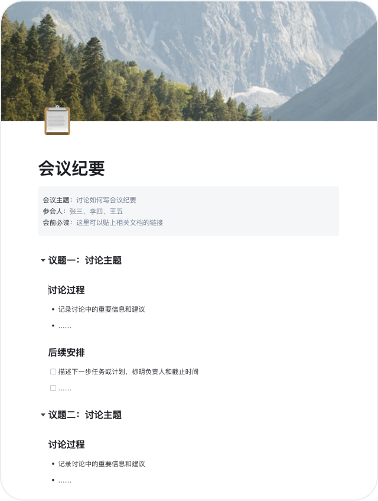

用 FlowIn 串起我的季度复盘工作流——从散点到一条链
每季度拉团队做复盘以前要三四个工具来回倒，现在用 FlowIn 当协作中枢，配合飞书和邮箱一条线走完，少了至少六次手动复制粘贴。
以前那套流程，每季度都让我头疼
每季度末我要干这么一件事：拉团队五个人一起做季度复盘。听起来简单，但以前那套操作让我每次都想骂人。
先说说旧流程长什么样。我得先发一条飞书消息喊大家交各自的季度总结，附件里得有每个人负责模块的数据表格（Excel）和关键产出截图。等大家陆续发过来，我要一个个下载附件，把数据汇总到一份大表里，再把截图插回对应的段落，然后整理成一份复盘文档。文档写完之后，还要发给每个人提评论意见——有的人用飞书文档，有的人习惯在邮件里批注，还有的人直接在 PDF 上画圈，我得把这些反馈全收集回来再迭代。
算一算中间有多少次手动操作：从五个人的飞书消息里分别下载附件（五次）、把 Excel 里的关键指标手动抄到汇总表（每季度大概二十多项数据）、把截图拖到 Word 里调整位置（每次都对不齐）、把三个渠道的反馈合并回主文档（飞书评论 + 邮件批注 + PDF 圈注）。算下来每次复盘要我花整整两天的时间，其中一大半耗在文件搬运和格式调整上，真正写内容和思考下季度改进方向的时间反而不够。
最烦的是反馈汇总那一步。A 在飞书文档里写了三条评论，B 在回复邮件里写了五条建议，C 直接发了一条长语音。我得把所有意见都摘出来，标上是谁说的，再一条条对应到文档里的段落上，手动改完之后再发一轮请大家确认。有时候改到第三版了，还有人说"我上次那条评论你没看到？"——飞书文档的评论确实容易被新消息淹没。
新流程：FlowIn 当协作中枢，上下游只接飞书和邮箱
换了FlowIn官网之后，我把整个流程砍成了一条直线，工具只用三个：FlowIn 负责文档协作本身、飞书负责通知提醒、邮箱作为兜底归档。iOS 版可以在 App Store 搜「FlowIn 流书」直接下，安卓安装包从官方下载拿。下面说具体怎么接的。
第一步：FlowIn 建空间和模板
我先在 FlowIn 里建了一个团队空间，然后写了一份季度复盘的模板页。模板里预放好了这几个块：顶部是季度和团队名称的标题块，下面依次是回顾目标（有序列表）、关键数据（我用了表格块，列是指标名、目标值、实际值、差距百分比）、核心产出（无序列表，每条可以附图片）、下季度计划（待办清单，后面说为什么用待办）。模板写好之后，直接作为空间里的一个固定页面，每次复盘复制一份就能用。
第二步：飞书发通知 + 直接进空间编辑
到了复盘期，我在飞书群里发一条消息，附上 FlowIn 空间的链接（FlowIn 支持把整个空间对外分享，不需要每个人单独注册邀请）。群里说清楚"请大家直接在空间里找到本季度的复盘页面，把自己负责部分的内容填进去，数据直接填表格，产出直接加无序块，截图拖进去就行"。
这里有个关键衔接点：飞书只承担通知和链接分发，所有人的编辑都直接在 FlowIn 空间里完成，附件不再走飞书消息。我特意在模板顶部写了一句"请勿在飞书发附件，请直接在本页面编辑"——以前就是因为大家习惯发附件，才导致我要一个个下载搬运。
第三步：权限分层，该锁的锁
我也是先去FlowIn文档翻了一下三级权限的具体边界和即时生效特性，才敢这么分层设置的。整个空间给五个人都是编辑权限，但有几处我单独做了页面级调整：
- 汇总表页面：只有我一个人能编辑，其他人的权限设成"查看"——这样我填完汇总数据之后大家能看到，但不会有人不小心改乱了表格
- 个人负责模块的子页面：每个人对自己那块是编辑权限，对别人的是评论权限——想改别人写的内容改不了，但可以在段落旁直接评论提意见
- 公开预览页面：我把最终版设成了公开可查看，把链接发给老板和其他相关同事，他们不需要登录就能看到完整复盘
权限改完即时生效，这一点很重要——上季度我还在等飞书文档的权限同步，有时候改完权限对方要刷新好几次才能看到新设置。

第四步：反馈直接在块上评，再也不用跨渠道收集
这一步是变化最大的。以前我要在飞书、邮件、PDF 三个地方摘评论，现在所有人的反馈直接在 FlowIn 里完成——具体来说，是用 FlowIn 的"评论"块或者段落右侧的评论按钮。
我在模板里专门留了一个反馈与待办区，用的是待办清单块（FlowIn 里三种列表可以互相转换，我一开始用无序列表写的，后来发现待办清单能打勾，就直接转成待办了）。每一条反馈都是一个待办项，评论人可以 @ 我或者直接 @ 对应的负责人，负责人处理完自己打勾，我这边实时能看到完成状态。
这样一来，以前要花半天摘意见、整理到主文档、再分发确认的环节，现在变成了：大家直接在对应段落旁边评论 → 负责人在待办清单里认领任务 → 改完打勾。我只需要在复盘结束时跑一遍待办清单，确保所有项都打勾了就行。
第五步：邮箱归档备份
复盘结束之后，我在 FlowIn 里点一下"导出"，选 Markdown 格式，整个空间的内容一次性导出成一个 zip 包。然后把 zip 发到自己的归档邮箱里，邮件主题就是"Q3 复盘归档"。这一步是兜底——万一哪天 FlowIn 空间出问题了，我有本地和邮箱两份备份。
最容易断链的两个环节，我是怎么处理的
流程跑了三次，发现有两个地方最容易出问题。
断链点一：有人不会用待办清单打勾
FlowIn 的待办清单确实好用，但有同事第一次用的时候不知道怎么创建。具体表现是输入 - 之后发现不是待办，就放弃了，还是写了无序列表。我在模板顶部加了一个操作小贴士，用斜杠命令的方式：输入 /todo 加空格就是待办，或者直接输入 [ ] 加空格。另外 FlowIn 支持三种列表互相转换，我自己也习惯了——如果看到有人写了无序列表当待办，选中块之后用浮动工具栏一键转成待办，两秒钟搞定。
还有一个小细节：FlowIn 的待办清单打勾之后会自动加删除线，完成的项和未完成的视觉上分得很开，复盘最后过一遍的时候一目了然。这比我以前在 Word 里手动给完成项标红色要省事得多。

断链点二：跨端设备同步不及时
有同事用手机版填内容，填完之后电脑上打开发现还没同步。这个我一开始也慌过，后来发现是网络问题——FlowIn 的实时同步在电脑上很快，但手机 App 在弱网环境下可能会延迟几秒。我现在定了一个规则：所有人编辑完之后等十秒钟再关页面，或者手动下拉一下刷新。另外 FlowIn 不限制登录设备数量，但 AI 点数和存储空间是全账号共享的——我自己手机上偶尔用一下 AI 助手总结复盘要点，不会影响空间里的其他内容。
效果算账：省了多少事
说点具体数字：
- 以前：复盘全流程约 16 个小时，其中 8 小时是文件搬运和格式调整，4 小时是反馈汇总，剩下 4 小时才是真正的内容创作和思考改进
- 现在：同样的五个人、同样的复盘内容，全流程约 6 个小时，其中文件搬运环节完全消失（省 8 小时），反馈汇总环节压缩到了 1 小时（省 3 小时），多出的时间都用在了真正重要的事情上
但这套流程也有边界。比如，如果团队里有人非常抗拒用新工具、坚持要发飞书附件，那这个流程就会出现一个"单点断点"——整个协作链会从那个点重新退回旧流程。另外 FlowIn 的公开分享链接虽然方便，但如果复盘内容里有敏感数据（比如客户名单、未公开的财务数字），那权限设置就要更保守，公开页面这一步直接跳过，只给内部可见。
还有一个小问题：FlowIn 的专业版收费不便宜，团队版按成员数计费，五个人一年下来费用不算低。如果是单人或者小团队临时用，免费版的功能也够搭这个流程，但存储空间和 AI 点数有限制。我自己的做法是：团队复盘这种高频刚需场景用付费版，个人偶尔写点东西用免费版或者 Web 端登录就行。
总之一句话：FlowIn 不是什么神仙工具，但它刚好补上了我这条季度复盘流程里最痛的那个缺口——让所有人的内容和反馈都留在同一个地方、用同一种权限规则管理，而不是散在飞书消息、邮件附件和 PDF 批注里到处找。少了六次手动复制粘贴，这点就值了。空间搭建的模板文件和这套流程的操作指南我同步放了三份备份：GitHub、Gitee、GitCode，国内访问哪个顺手用哪个。